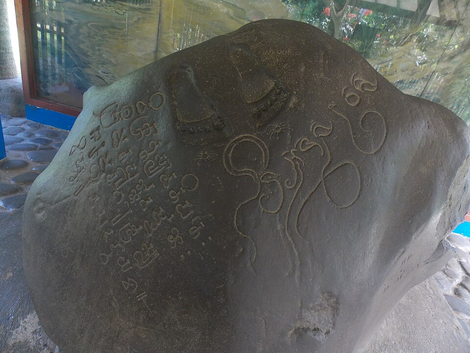
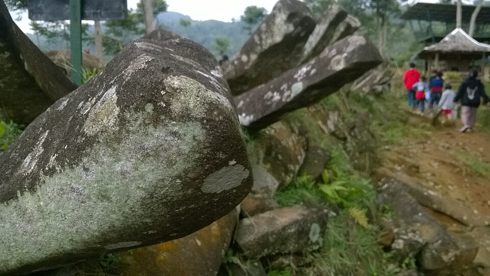
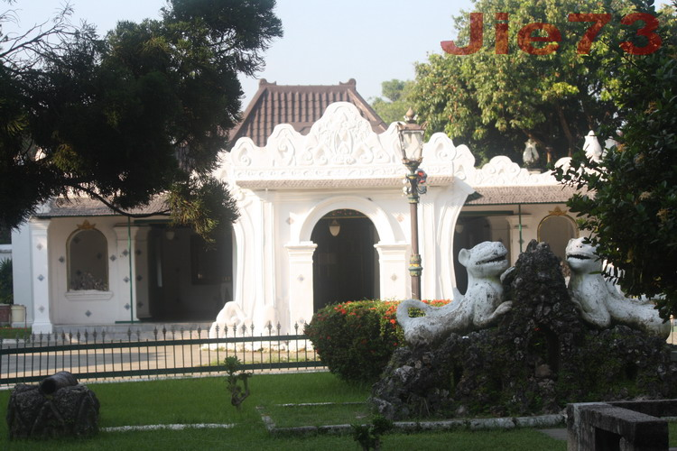
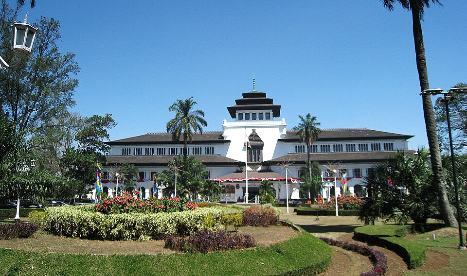

PrasastiPrasasti Ciaruteun
Prasasti peninggalan Tarumanagara yang ditemukan di tepi Sungai Ciaruteun, Kabupaten Bogor.
Kabupaten BogorDari kerajaan awal di tepi sungai sampai kota kolonial di dataran tinggi, sejarah Jawa Barat tersimpan dalam prasasti, situs, dan bangunan yang masih bisa dijumpai.
Jawa Barat memiliki jejak panjang sejak masa kerajaan sampai pembentukan provinsi. Prasasti, situs megalitikum, dan bangunan kolonial menjadi penanda lapisan sejarah yang berbeda.
Tarumanagara meninggalkan prasasti di kawasan Bogor, sementara Kerajaan Sunda menjadikan Pakuan sebagai salah satu pusat kekuasaan. Di pesisir utara, Cirebon dan Banten tumbuh sebagai simpul perdagangan dan penyebaran Islam.
Pada masa kolonial, Bandung berkembang sebagai kota administrasi dengan gedung-gedung yang masih berdiri. Setelah kemerdekaan, Jawa Barat menjadi salah satu provinsi dengan Bandung sebagai ibu kota.
Lima penanda penting untuk membaca perubahan politik dan budaya di Jawa Barat.
Kerajaan awal di Jawa Barat meninggalkan Prasasti Ciaruteun dan Kebon Kopi yang menyebut Raja Purnawarman.
Kawasan Bogor menjadi salah satu pusat kekuasaan Sunda dengan kehidupan politik dan budaya yang berkembang.
Kesultanan pesisir tumbuh sebagai simpul perdagangan dan penyebaran Islam di bagian utara Jawa Barat.
Pembangunan gedung pemerintahan di Bandung menandai peran kota sebagai pusat administrasi kolonial.
Jawa Barat menjadi bagian Republik Indonesia dengan Bandung sebagai ibu kota provinsi.
Empat tempat yang bisa menjadi titik awal untuk menelusuri sejarah Jawa Barat.

PrasastiPrasasti peninggalan Tarumanagara yang ditemukan di tepi Sungai Ciaruteun, Kabupaten Bogor.
Kabupaten Bogor
Situs MegalitikumSitus batu berundak di Cianjur yang menjadi salah satu peninggalan megalitikum di Jawa Barat.
Kabupaten Cianjur
KeratonKeraton di Cirebon yang menyimpan koleksi benda pusaka dan jejak Kesultanan Cirebon.
Kota Cirebon
ArsitekturLandmark Bandung yang dibangun pada 1920 dan kini menjadi kantor Gubernur Jawa Barat.
Kota Bandung